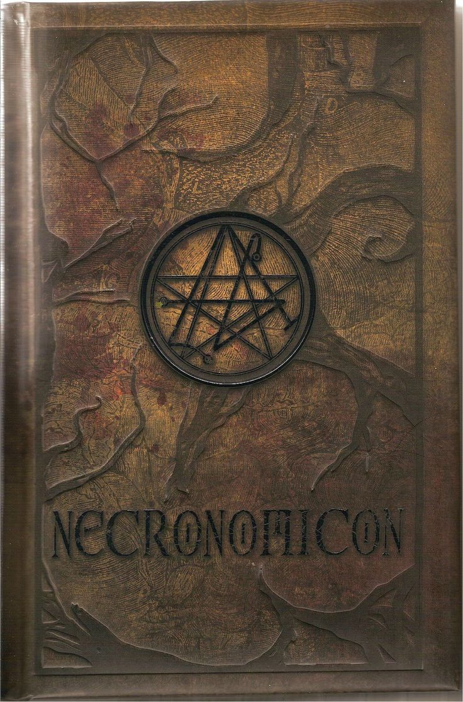

О нас
На этом сайте можно найти множество статей по самым разным областям мистики. Множество информации, публикуемой здесь, не являються частью какой-либо мифологии, в основном это мистические существа из литературных рассказов. Множество, но не все. Если у вас есть вопросы или предложения, можете написать мне во ВКонтаке
Рекомендованные статьи

Некрономикон: Книга придуманная и используемая Г.Ф.Лавкрафтом в своих рассказах. Согласно описанию самого писателя, эта книга написанная безумным арабом Абдулом Альхазредом и повествующая о секретах древних